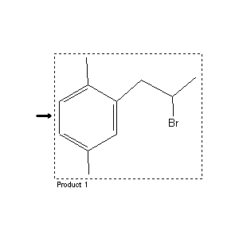

|  |
| FA | RX(1); FLST(1); RX(1) |
Reaction (1 of 1)
| Reaction ID | 7388338 |
| Product BRN | 2247989 |
| Product | 2-Brom-1-p-xylyl-propan |
| No. of Reaction Details | 1 |
Reaction Details (1 of 1)
| Reaction Classification | Preparation (half reaction) |
| Citation Pointer | 4316754; Journal; Schachgel'diew; AZKZAU; Azerb.Khim.Zh.; 1; 1968; 40; Chem.Abstr.; 70; 11235; 1969;4367596; Journal; Sochvabbekowa et al.; AZKZAU; Azerb.Khim.Zh.; 2; 1973; 70; Chem.Abstr.; 80; 108083; 1974;4590932; Journal; Marei et al.; JUARAK; J.Chem.U.A.R.; 12; 1969; 323,329;4799415; Journal; Farkhadov et al.; DAZRA7; Dokl.Akad.Nauk Az.SSR; 29; 4; 1973; 18; Chem.Abstr.; 80; 108079y; 1974; |
Reference (1 of 4)
| Citation Number | 4316754 |
| Document Type | Journal |
| Authors | Schachgel'diew |
| CODEN | AZKZAU |
| Journal Title | Azerb.Khim.Zh. |
| Journal/Review Without CODEN | Chem.Abstr. |
| (Series) Volume | 1; 70 |
| Number | 11235 |
| Publication Year | 1968; 1969 |
| Page | 40 |
Reference (2 of 4)
| Citation Number | 4367596 |
| Document Type | Journal |
| Authors | Sochvabbekowa et al. |
| CODEN | AZKZAU |
| Journal Title | Azerb.Khim.Zh. |
| Journal/Review Without CODEN | Chem.Abstr. |
| (Series) Volume | 2; 80 |
| Number | 108083 |
| Publication Year | 1973; 1974 |
| Page | 70 |
Reference (3 of 4)
| Citation Number | 4590932 |
| Document Type | Journal |
| Authors | Marei et al. |
| CODEN | JUARAK |
| Journal Title | J.Chem.U.A.R. |
| (Series) Volume | 12 |
| Publication Year | 1969 |
| Page | 323,329 |
Reference (4 of 4)
| Citation Number | 4799415 |
| Document Type | Journal |
| Authors | Farkhadov et al. |
| CODEN | DAZRA7 |
| Journal Title | Dokl.Akad.Nauk Az.SSR |
| Journal/Review Without CODEN | Chem.Abstr. |
| (Series) Volume | 29; 80 |
| Number | 4; 108079y |
| Publication Year | 1973; 1974 |
| Page | 18 |